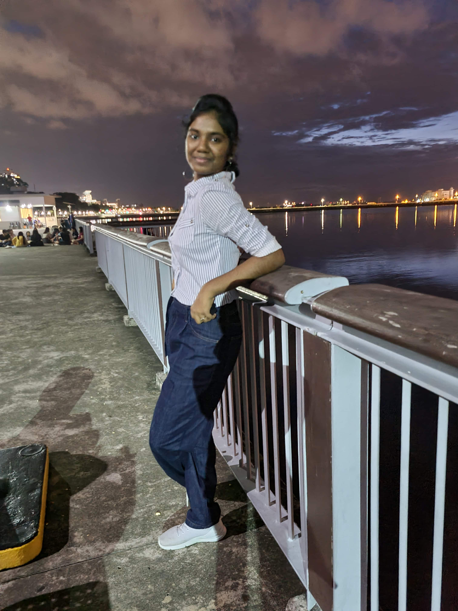

My Work As A Writer Here's everything I've done as a writer... WEB PAGE I've written SEO-friendly and marketable web content for an Astrology website and a nephrology blog. SOCIAL MEDIA Curated post content, captions, and Bio for several social media pages. I've helped improve post-performance through hashtag research as well. COPY WRITING I've also played a key part in marketing these pages by writing copies for ad campaigns. MAGAZINE WRITING I've written articles for my school and college magazine on topics that include women empowerment and Indian independance. POETRY I've tested my waters in poetry as well. I have a blooming poetry page on Instagram. BLOGGING I've been a blogger myself since 2020 when I began my journey professionally as a writer. But I've also written 50+ blogs for a variety of clients under topics like tourism, elderly healthcare, and education.
WHO AM I ?  Hey there, I'm Harini an aspiring journalist with great fondness for writing. My relationship with words started off when I was pretty young. I began my journey by writing essays and compositions for school. Today I've explored various paths including web content, blogging, copywriting, and even poetry. One day, I dream to travel to different places around the world, understand their cultures and write for my very own magazine. But for now, I wish to try all the different opportunities out there and expand my horizon for words.